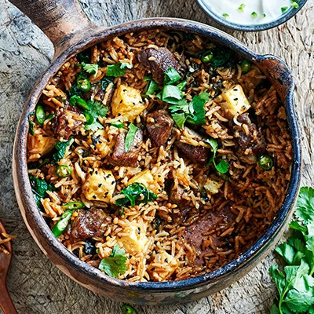

Projects
Recipes
Contact
Lamb Biryani

Make this classic Indian dish for deliciously moist lamb with paneer, rice and spinach, all spiced to perfection. Great for casual entertaining
Serves 6 | Takes 60 mins
Original recipe:
https://www.bbcgoodfood.com/recipes/lamb-biryani
main
dairy
meat
Ingredients
400g lamb neck, cut into small cubes
4 garlic cloves, grated
1 tbsp finely grated ginger
1 tbsp sunflower oil
1 large onion, chopped
1 tbsp cumin seeds
1 tbsp nigella seeds
1 tbsp Madras spice paste
200g basmati rice, rinsed well
8 curry leaves
400ml good-quality lamb or chicken stock
100g paneer, chopped
200g spinach, cooked and water squeezed out
Salt
To serve: chopped coriander, sliced green chillies, plain yogurt
Method
Toss the lamb in a bowl with the garlic, ginger and a large pinch of salt. Marinate in the fridge overnight or for at least a couple of hours.
Heat the oil in a casserole. Fry the lamb for 5-10 mins until starting to brown. Add the onion, cumin seeds and nigella seeds, and cook for 5 mins until starting to soften. Stir in the curry paste, then cook for 1 min more. Scatter in the rice and curry leaves, then pour over the stock and bring to the boil. Meanwhile, heat oven to 180C/160C fan/gas 4.
Stir in the paneer, spinach and some seasoning. Cover the dish with a tight lid of foil, then put the lid on to ensure it’s well sealed. Cook in the oven for 20 mins, then leave to stand, covered, for 10 mins. Bring the dish to the table, remove the lid and foil, scatter with the coriander and chillies and serve with yogurt on the side.